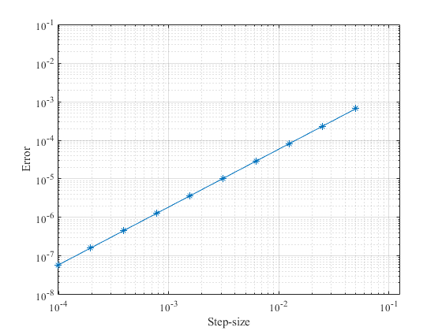

Contents
clear
Cases
test = 'Poisson1D 2(f)1';
Initial Values
M_h = 10;
for M = 1:M_h
h0=.1;
h = h0/2^M;
x = 0:h:1;
u = zeros(length(x)-2,1);
e = ones(length(x)-2,1);
A = spdiags([-e./h^2 2*e/h^2 -e/h^2],-1:1,length(x)-2,length(x)-2);
Boundary and exact solution
switch test
case 'Poisson1D 2(f)1'
f = @(x) sin(pi.*x);
exact = @(x) sin(pi.*x)./pi^2;
rhs = f(x);
u_exact = exact(x);
boundary = zeros(length(x)-2,1);
case 'Poisson1D 2(f)2'
f = @(x) 1./x;
exact = @(x) -x.*log(x)+ x;
rhs = f(x);
u_exact = exact(x);
alpha = 0.;
beta = 1./h^2;
boundary = zeros(length(x)-2,1);
boundary(1) = alpha;
boundary(end) = beta;
case 'Poisson1D 2(f)3'
f = @(x) cos(pi*x);
exact = @(x) (2.*x - 1 + cos(pi.*x))./pi^2;
rhs = f(x);
u_exact = exact(x);
alpha = 0;
beta = 0;
boundary = zeros(length(x)-2,1);
boundary(1) = alpha;
boundary(end) = beta;
end
Solving the problem
switch test
case 'Poisson1D 2(f)1'
F = rhs(2:end-1)'+ boundary;
u = A\F;
error(M) = norm(u - u_exact(2:end-1)');
case 'Poisson1D 2(f)2'
F = rhs(2:end-1)'+ boundary;
u = A\F;
error(M) = norm(u - u_exact(2:end-1)');
case 'Poisson1D 2(f)3'
F = rhs(2:end-1)'+ boundary;
u = A\F;
error(M) = norm(u - u_exact(2:end-1)');
end
end
Visualization
m = 1:M_h;
H = h0./2.^m;
p = polyfit(log10(H),log10(error),1)
switch test
case 'Poisson1D 2(f)1'
loglog(H,error,'-*')
case 'Poisson1D 2(f)2'
loglog(H,error,'-o')
case 'Poisson1D 2(f)3'
loglog(H,error,'-+')
end
hold on
axis('equal')
grid on
xlabel('Step-size')
ylabel('Error')
set(gca, 'FontName', 'Times New Roman')
p =
1.4998 -1.2299
